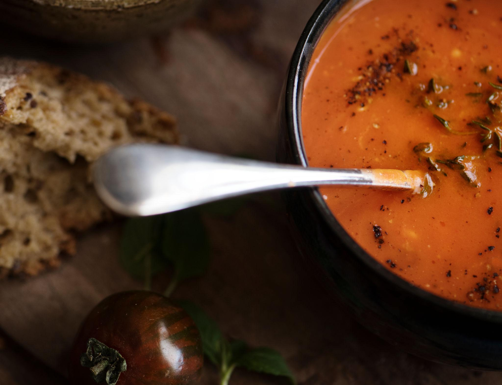
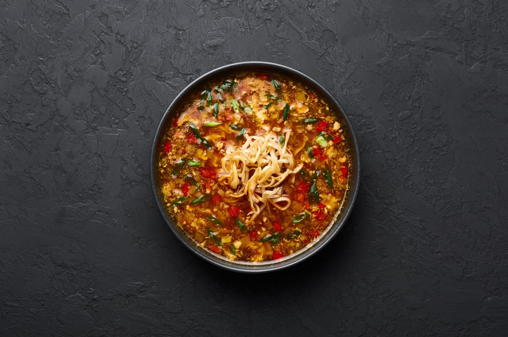
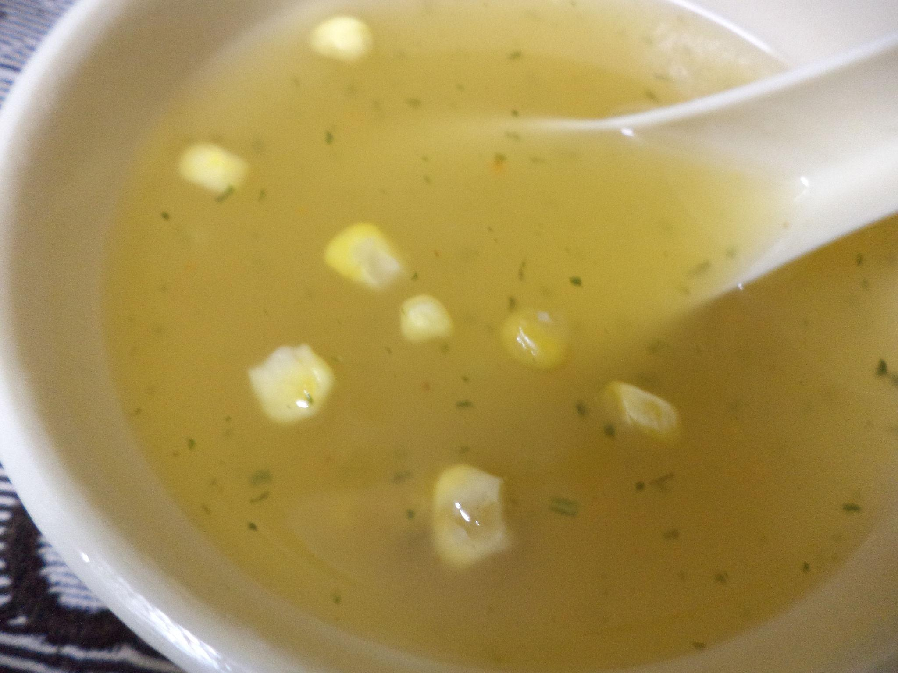
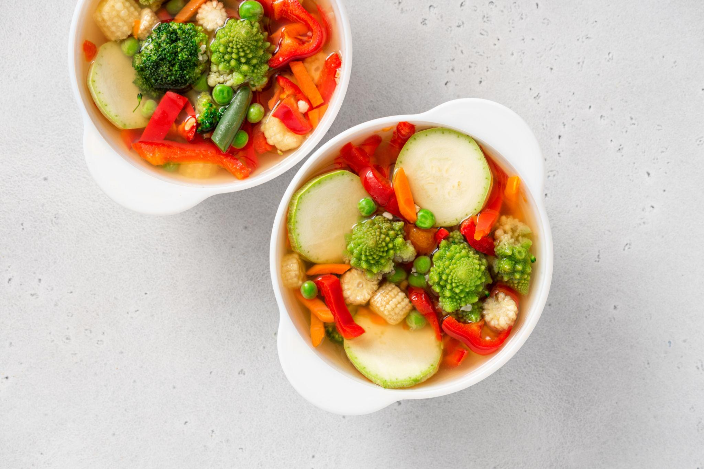
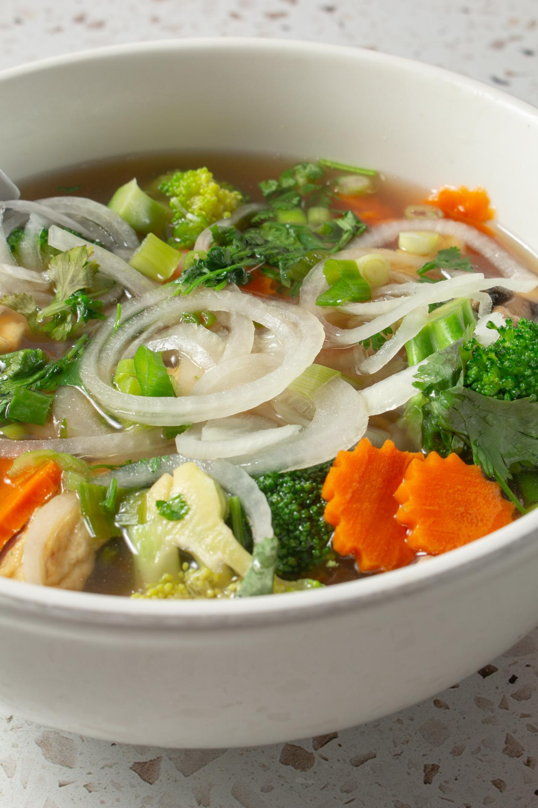

Tomato Soup

Ingredients
- 4 ripe tomatoes
- 2 cups water
- 1 tbsp butter
- 1 small onion
- 1 tsp garlic
- 1/2 tsp black pepper
- Salt to taste
How to make Tomato Soup
- Boil tomatoes with water.
- Blend tomatoes into smooth puree.
- Sauté onion and garlic in butter.
- Add tomato puree.
- Add salt and pepper.
- Cook for 5 minutes.
- Serve hot.
Veg Manchow Soup

Ingredients
- 1/2 cup cabbage
- 1/4 cup carrot
- 1/4 cup capsicum
- 2 cups vegetable stock
- 1 tsp soy sauce
- 1 tsp chili sauce
- 1 tbsp cornflour slurry
- Salt and pepper
How to make Manchow Soup
- Sauté garlic in oil.
- Add cabbage, carrot and capsicum.
- Add vegetable stock.
- Add soy and chili sauce.
- Add cornflour slurry.
- Cook until thick.
- Serve hot with fried noodles.
Sweet Corn Soup

Ingredients
- 1 cup sweet corn
- 3 cups vegetable stock
- 1 tbsp cornflour
- 1/4 cup carrot
- 1/4 cup beans
- Salt to taste
- White pepper
How to make Sweet Corn Soup
- Boil vegetable stock.
- Add corn and vegetables.
- Add cornflour slurry.
- Cook for 3 minutes.
- Add salt and pepper.
- Simmer for 2 minutes.
- Serve hot.
Hot and Sour Veg Soup
Ingredients
- 1/2 cup mushrooms
- 1/4 cup carrot
- 1/4 cup cabbage
- 3 cups vegetable stock
- 1 tsp soy sauce
- 1 tsp vinegar
- 1 tbsp cornflour slurry
- Salt and pepper
How to make Hot&Sour Soup
- Boil vegetable stock.
- Add vegetables.
- Add soy sauce and vinegar.
- Add cornflour slurry.
- Cook for 3–4 minutes.
- Add salt and pepper.
- Serve hot.
Mixed Vegetable Soup

Ingredients
- 1/4 cup carrot
- 1/4 cup beans
- 1/4 cup peas
- 3 cups vegetable stock
- 1 tsp garlic
- 1/2 tsp black pepper
- Salt
How to make Vegetable Soup
- Sauté garlic in oil.
- Add chopped vegetables.
- Add vegetable stock.
- Cook for 10 minutes.
- Add salt and pepper.
- Simmer for 5 minutes.
- Serve hot.
Vegetable Clear Soup

Ingredients
- 1 carrot
- 1/4 cup cabbage
- 1/4 cup beans
- 3 cups water
- 1 tsp garlic
- Salt
- Black pepper
How to make Clear Soup
- Boil water.
- Add vegetables and garlic.
- Cook for 15 minutes.
- Add salt and pepper.
- Simmer for 5 minutes.
- Strain if needed.
- Serve hot.